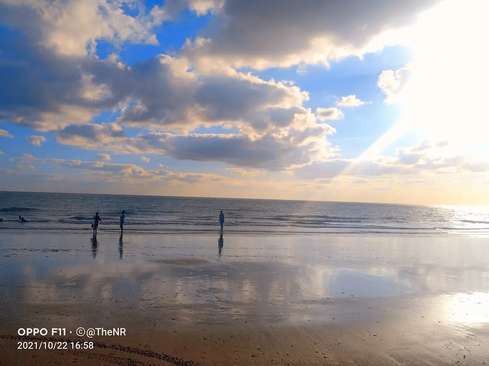

Beach Town
Mandvi — Where the Desert Meets the Sea
📍✨
Famous For
Pristine beaches & Vijay Vilas Palace
🌤️
Best Season
November to February
View Details→
Where salt meets sky, and stories meet silenceYour complete Kutch tour guide with real photos and local tips — not just brochures.
Start with our handpicked favorites - the must-visit places that capture the essence of Kutch's beauty and heritage.
Famous For
Pristine beaches & Vijay Vilas Palace
Best Season
November to February
Famous For
Historic palaces, museums & vibrant bazaars
Best Season
November to February
Famous For
Rich cultural heritage & scenic beauty
Best Season
November to February

Famous For
Black Hills & India's magnetic hill
Best Season
November to February
Famous For
Ancient Ashapura Mata temple & pilgrimage site
Best Season
November to February

Famous For
Iconic straight highway through salt flats
Best Season
November to February
We've shown you just a glimpse! Discover 12 more incredible destinations waiting to be explored in Kutch.
View All 18+ Destinations→Immersive vertical clips showcasing the soul of our homeland.


Immerse yourself in the vibrant world of Kutchi traditions, where every thread tells a storyand every craft carries centuries of heritage.
Tie-dye artistry with intricate dot patterns
Block-printed geometric masterpieces
Painted fabric with castor oil colors
Shisha embroidery with tiny mirrors
Traditional knife-making in Anjar
Clay craft traditions across villages

Traditional leather working & mojari shoes

Handloom textiles & traditional carpets
Find the best deals on hotels and flights
From heritage palaces in Bhuj to desert camps in the Rann. Best prices guaranteed.
Best flight deals to Bhuj/Ahmedabad and curated Kutch experiences.
Your complete guide to experiencing Kutch like never before. We've curated everything you need for an unforgettable desert adventure.
Choose your perfect season
Pleasant weather (10-25°C), Rann Utsav festival, perfect for desert camping.
Mild temperatures, fewer crowds, great for photography and village visits.
Extremely hot (40-48°C), monsoon rains, many facilities closed.
All routes lead to Kutch
Bhuj Airport (BHJ) - Direct flights from major cities, 60 km from Rann.
Bhuj Railway Station - Overnight trains from Mumbai, Delhi, Ahmedabad.
Well-connected highways from Ahmedabad (330 km) and Rajkot (250 km).
Beyond the White Desert
Premium resorts & 5-star properties
Royal palaces & historic havelis
Starting from ₹800/night - Guesthouses, hostels, and budget hotels available in Bhuj and surrounding villages.
Travel smart, travel light
Cotton & warm layers
Shoes & sandals
Sunscreen & hat
Camera & batteries
Water & snacks
First aid & meds
Experience the magic of India's largest salt desert, vibrant culture, and timeless traditions
Check weather daily, carry plenty of water, protect from heat
Keep emergency contacts, network may be limited in remote areas
Hire experienced guides for authentic village experiences
Get customized itineraries, local insights, and 24/7 support for your Kutch journey. Our local experts are here to help plan your perfect adventure.
Join our community of Kutch explorers! Get exclusive updates on Rann Utsav, discover hidden gems, and receive insider tips that will transform your journey through this magical desert land.
From the White Desert to ancient ports, discover your perfect Kutch adventure